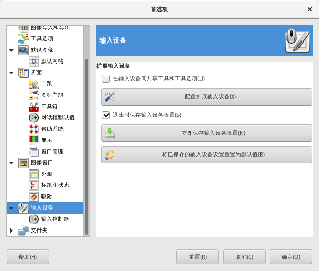
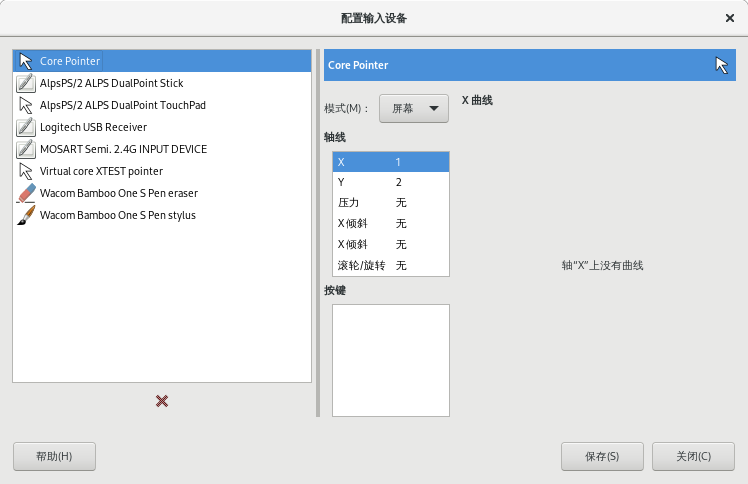
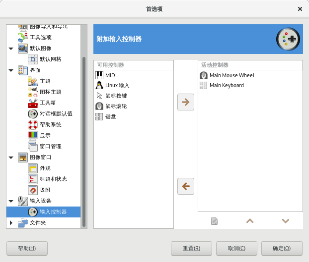

首选项→输入设备

首选项→输入设备
在输入设备间共享工具和工具选项
勾选此项后，所有输入设备使用相同的工具和工具选项。输入设备变化时，工具不会切换。
配置扩展输入设备
这个按钮可以设置与计算机关联的设备，比如绘图板。如果你配备了绘图板，应该能看到下面这样一个对话框(如果刚把绘图板连接到电脑，可能需要重启GIMP)：

连接绘图板后的窗口内容
退出时保存输入设备设置
勾选此项后，GIMP会记住你上次退出GIMP时使用的工具、颜色、图案和笔刷。
立即保存输入设备设置
马上保存输入设置的参数。
将已保存的输入设备设置重置为默认值
删除自定义设置，恢复为GIMP默认设置。
输入控制器

首选项→输入设备→输入控制器
该对话框有两个附加输入控制器列表，左边是可用控制器 , 右边是活动控制器。
此对话框主要用于启用或禁用一个输入设备并可以对该设备进行配置。
点击选中一个项目后，您可以点击中间的方向键将控制器在左右列表之间移动。
当您尝试将一个控制器从活动控制器框移动到可用控制器框时，会弹出一个对话框，您可以选择删除该控制器或只是禁用该控制器。
当您双击一个控制器或点击列表底部的编辑按钮时，会出弹出一个对话窗口，然后您可以在对话窗口中配置该控制器。
主鼠标滚轮 {Main Mouse Wheel}
转储来自此控制器的事件
如果想在stdout上输出由启用的控制器产生的事件，必须勾选这个选项。
如果想看到这些事件，您应该从终端启动GIMP，或者通过shell重定向使其将stdout打印到文件。这个选项的主要用途是用于调试。
启用此控制器
如果想在鼠标滚轮上添加新的动作，必须勾选这个选项。
鼠标滚轮事件
在这个窗口中，左边是与鼠标滚轮有关的可能事件；右边是分配给事件发生时的动作。下面有两个按钮，一个是编辑所选事件，另一个是清空所选事件。
有些动作没有分配事件。
主键盘{Main Keyboard}
与主鼠标滚轮对话框基本相同。
事件与键盘的方向键有关，可与控制键组合使用或不组合使用。